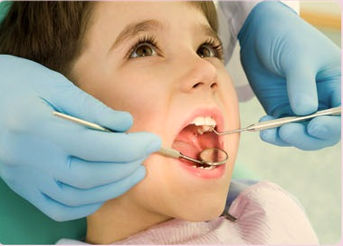

Kids
Bringing up your child with proper attention to their oral health is a lifelong investment in their health, which will benefit them greatly for the rest of their lives. Early childhood cavities is a disease that can ruin your child’s teeth, even into adulthood, but it is easily preventable.
There are a wide variety of steps you can take to teach your child good dental habits, and one of the best is leading by example. Make sure your child knows how much importance you place on dental health so they know that it is something to be valued. Brushing your teeth along with your child and letting them follow your lead can be really helpful in setting up the habit of teeth brushing in your child’s life.
How do I care for my child’s primary teeth?
Even though your child’s baby teeth fall out eventually, it is important to take good care of them while they are present. Baby teeth are important for biting, chewing, and serve as guides for adult teeth which will eventually grow in. Taking proper care of baby teeth helps ensure that adult teeth come in correctly and can help prevent future dental issues.